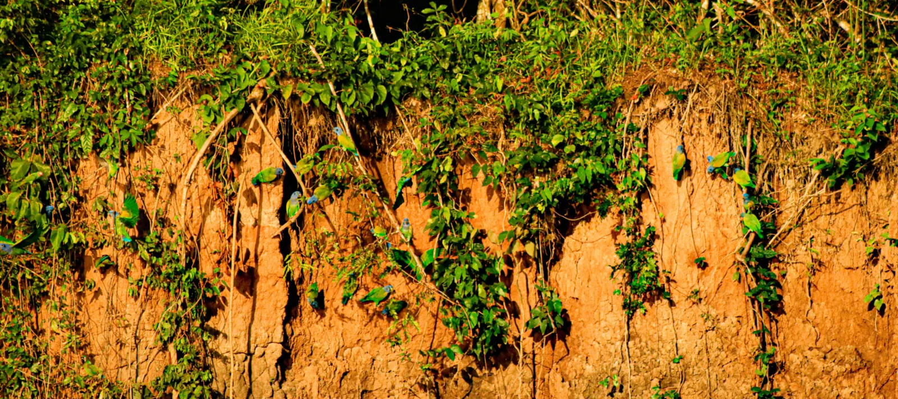
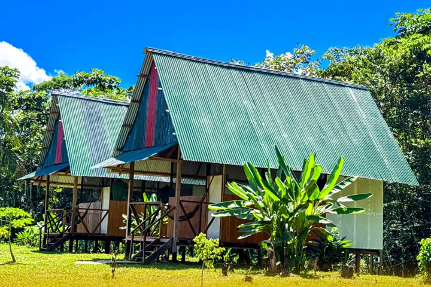
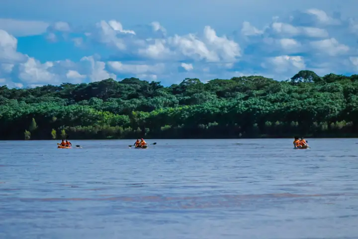
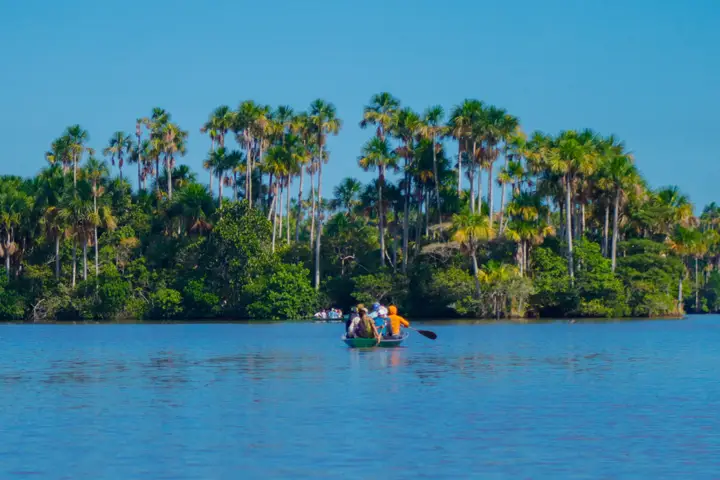

Gran experiencia en Tambopata · 4 días / 3 noches
- Duración4 días / 3 noches
- DificultadFácil
- Alturaselva baja



Resumen
Naturaleza, cultura, aventura y vida local: el lago Sandoval, la collpa de loros al amanecer, una familia Matsiguenka, una chacra, tirolesa y kayak.
Lugares que visitarás
- Puerto Maldonado
- Lago Sandoval
- Collpa de loros La Cachuela
- Familia Matsiguenka
- Isla de Monos Rolín
Alojamiento
Casa hospedaje Jaguar Tambopata Jungle, en la Reserva Nacional Tambopata, a unos 40 minutos en bote desde Puerto Maldonado: bungalows con terraza, restaurante, piscina, tirolesa y puente colgante, rodeados de bosque conservado. Ingreso desde las 10:00 a. m.; salida hasta las 5:00 p. m. [Confirmar que los US$ 290 son de este programa]
Itinerario Del programa del operador
01Día 1 · Llegada, pesca y caimanes
- Salida desde el Puerto Capitanía de Puerto Maldonado: unos 40 minutos en bote por el río Madre de Dios hasta la casa hospedaje, en la Reserva Nacional Tambopata.
- Instalación y caminata por el bosque que rodea el albergue.
- 1:00 p. m. Almuerzo.
- 3:00 p. m. Pesca deportiva cerca del río Madre de Dios y, si el día acompaña, el atardecer.
- Salida por el río para ver caimanes y, con suerte, capibaras, aves y murciélagos.
- 7:30 p. m. Cena.
02Día 2 · Lago Sandoval
- 8:00 a. m. Desayuno.
- 10:00 a. m. Unos 15 minutos en bote hasta el puesto de control del lago Sandoval.
- Caminata de unos 3 km por el bosque, entre ficus, lupunas, palmeras y shihuahuacos, con la posibilidad de ver monos, aves y ardillas.
- Paseo en canoa a remo por el lago: con suerte, lobos de río, guacamayos, shanshos, garzas, caimán negro y monos.
- Almuerzo en el puesto de una familia local y regreso por el mismo sendero.
- 7:30 p. m. Cena.
03Día 3 · Collpa de loros, familia Matsiguenka y chacra
- 4:30 a. m. Salida en canoa por el río Madre de Dios, al amanecer, a la collpa de loros La Cachuela, donde los loros llegan a comer arcilla.
- Regreso para el desayuno y mañana libre en la piscina.
- 1:00 p. m. Almuerzo.
- Visita a una familia Matsiguenka, originaria del Parque Nacional del Manu, que vive a orillas del río Madre de Dios: el hilado, el fuego encendido a la manera tradicional y el tiro con flecha.
- Visita a una chacra local: la agroforestería en la selva y los frutos de temporada.
04Día 4 · Tirolesa, kayak y retorno
- 8:00 a. m. Desayuno.
- Tirolesa y puente colgante cerca del albergue.
- 1:00 p. m. Almuerzo.
- 3:00 p. m. Kayak por el río Madre de Dios y visita a la Isla de Monos Rolín, donde viven monos capuchinos rescatados por pobladores locales.
- Recojo del equipaje y retorno a la ciudad.
El orden y los horarios pueden cambiar según el guía, el clima y el estado físico del grupo. Avísanos la hora de tu vuelo de regreso para programar el retorno a la ciudad.
Qué incluye Del programa del operador
Incluye
- Entrada a la Reserva Nacional Tambopata
- Guía profesional
- Hospedaje y alimentación
- Transporte fluvial
No incluye
- Bebidas del bar
Qué llevar
- Documentos personales
- Repelente
- Protector solar
- Gorro
- Lentes de sol
- Ropa de baño
- Abrigo
- Poncho de lluvia portátil
- Botella de agua reutilizable
- Ropa cómoda
- Calzado cerrado y cómodo para caminar
- Tus medicamentos, si tomas alguno
- Ventilador de mano
Precio
| Precio del tour | US$ 290 |
|---|---|
| Tour privado | [por confirmar] |
| Descuentos (estudiantes, niños) | [por confirmar] |
Preguntas frecuentes
¿Dónde y a qué hora me recogen?
En los tours desde Cusco, en tu hotel. La hora exacta depende del tour: te la confirmamos por WhatsApp al reservar. [Horarios de recojo de cada tour: por confirmar]
¿Qué calzado necesito?
Para los tours culturales bastan zapatillas cómodas. Para las montañas y las caminatas, zapatillas de trekking o con buena suela, porque hay tramos de tierra y piedra. En la selva, calzado que se pueda mojar.
¿Cuál es la mejor época para viajar a Cusco y Machu Picchu?
La temporada seca, de mayo a septiembre, tiene cielos más despejados. De diciembre a marzo llueve más, pero hay menos gente.
¿Qué es el soroche y cómo evitarlo?
Es el malestar por la altura: Cusco está a unos 3,400 m. Descansa el primer día, come liviano, toma bastante agua y deja las montañas para después.
-
 3 días / 2 noches
Fácil · selva baja
Experiencia completa de Tambopata · 3 días / 2 noches
Puerto Maldonado · Familia Matsiguenka · Lago Sandoval · Isla de Monos Rolín
Precio por confirmarVer tour →
3 días / 2 noches
Fácil · selva baja
Experiencia completa de Tambopata · 3 días / 2 noches
Puerto Maldonado · Familia Matsiguenka · Lago Sandoval · Isla de Monos Rolín
Precio por confirmarVer tour →
-
 2 días / 1 noche
Fácil · selva baja
Aventura y Lago Sandoval · 2 días / 1 noche
Puerto Maldonado · Isla de Monos Rolín · Lago Sandoval
Precio por confirmarVer tour →
2 días / 1 noche
Fácil · selva baja
Aventura y Lago Sandoval · 2 días / 1 noche
Puerto Maldonado · Isla de Monos Rolín · Lago Sandoval
Precio por confirmarVer tour →
-

2 días / 1 noche Fácil · selva baja Lago Sandoval · 2 días / 1 noche Puerto Maldonado · Isla de Monos Rolín · Lago Sandoval Precio por confirmarVer tour →